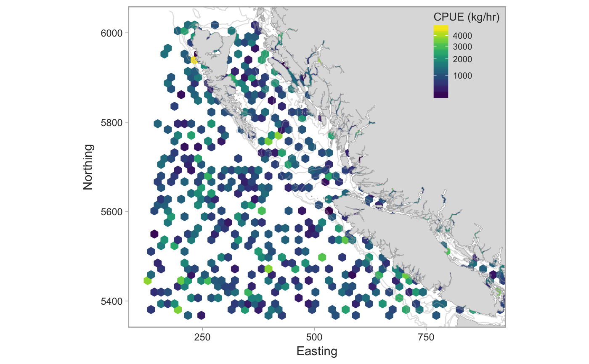

Plot a map of commercial CPUE
plot_cpue_spatial(dat, bin_width = 7, n_minimum_vessels = 3, xlim = c(122, 890), ylim = c(5373, 6027), utm_zone = 9, bath = c(100, 200, 500), fill_scale = ggplot2::scale_fill_viridis_c(trans = "sqrt", option = "D"), colour_scale = ggplot2::scale_colour_viridis_c(trans = "sqrt", option = "D"), rotation_angle = 0, rotation_center = c(500, 5700), fill_lab = "CPUE (kg/hr)", return_data = FALSE, min_cells = 10)
| dat | Data from |
|---|---|
| bin_width | Width of hexagons in km. |
| n_minimum_vessels | Minimum number of unique vessels before a hexagon is shown. Defaults to 3 to satisfy privacy requirements. |
| xlim | X axis limits in UTM units. |
| ylim | Y axis limits in UTM units. |
| utm_zone | UTM zone. |
| bath | A numeric vector of depths to show bathymetry countours at. |
| fill_scale | A ggplot |
| colour_scale | A ggplot |
| rotation_angle | Angle to rotate the entire map. Used in the synopsis report to rotate the coast 40 degrees to fit more plots on the page. |
| rotation_center | The center in UTM coordinates around which to rotate the coast if it is rotated at all. |
| fill_lab | Label for the color legend. |
| return_data | Logical for whether to return the data instead of the plot. |
| min_cells | The minimum number of cells needed before the hexagons are shown. |
## fake data demo: xlim <- c(-134.1, -123.0) ylim <- c(48.4, 54.25) d <- dplyr::tibble(lat = runif(1000, min(ylim), max(ylim)), lon = runif(length(lat), min(xlim), max(xlim)), species_common_name = "fake species", cpue = rlnorm(length(lat), log(1000), 0.6), vessel_registration_number = rep(seq_len(100), each = 10)) plot_cpue_spatial(d, bin_width = 15, n_minimum_vessels = 1)